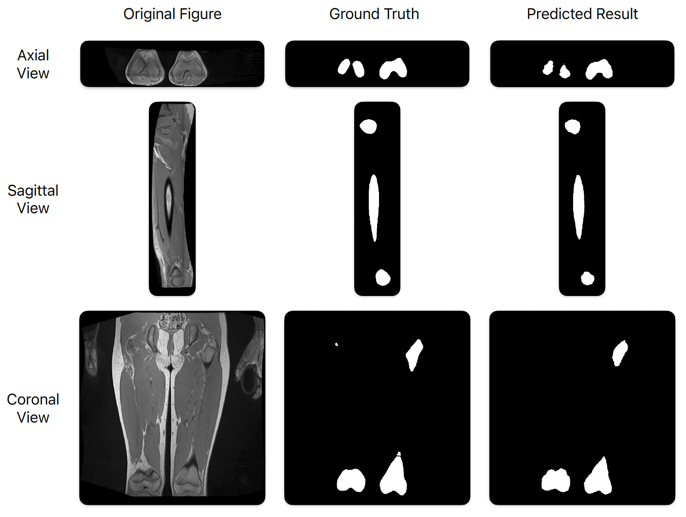

Publications

|
M. Liu, J. Lee 2025 ASEE Annual Conference. [arXiv] [GitHub] |
|
M. Liu, Y. Chen, A. Tian, X. Wu, M. Shen, T. Gong, J. Lee 2025 IEEE Conference on Artificial Intelligence (CAI 2025). [arXiv] |
|  |
M. Liu, D. Zhang, Y. Chen, T. Gong, H. Kainz, S. Song, J. Lee 2025 15th International Conference on Bioscience, Biochemistry and Bioinformatics (ICBBB 2025). [Paper] [GitHub] |
|
Y. Zhang, D. Wang, J. Xu, M. Liu, P. Zhu, and W. Ren 2025 IEEE 21st International Conference on Automation Science and Engineering (CASE 2025). [arXiv] [Video] |